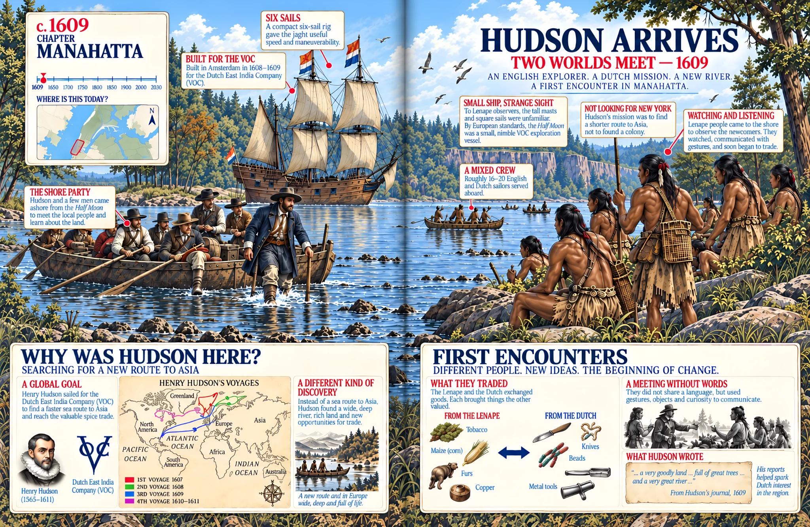

Every era connects to a real place.
Readers can see where history happened.
Maps, streets, waterfronts and landmarks connect past events to places families can still visit, cross, ride beneath or look up at today.
Cities Through Time · Visual Learning · Ages 10+
Walk the same city through four centuries.
Watch everything around you change.
From Manahatta and New Amsterdam to immigration, bridges, skyscrapers, subways, 9/11 and the city of tomorrow—see how New York became New York.
Move to explore · Click to look inside
Why readers enjoy it
Three ways the visual journey makes four centuries easier to understand.
Every era connects to a real place.
Maps, streets, waterfronts and landmarks connect past events to places families can still visit, cross, ride beneath or look up at today.
The pictures do more than decorate.
Timelines, annotated scenes and infographics show how trade, immigration, transit, bridges, skyscrapers and rebuilding changed the city over time.
Useful before the trip. Better after it.
It gives young readers context before visiting New York—and new stories behind the places they remember once they come home.
See inside the book
The book opens as you reach it. Use the arrows or chapter markers to explore five real interior spreads from across New York’s story.

Swipe to turn
Meet Henry Hudson’s crew and the Lenape at the beginning of a story that will transform the island.
Spread 1 of 5
THE BOOK, UP CLOSE

See it in the book: Hudson arrives.

See it in the book: The harbor of protest.

See it in the book: The city connects.
The same city. A different world.
Meet the waterfront at the beginning of the book’s story, with Henry Hudson’s crew and the Lenape.
Choose a topic. Inspect the illustration. Discover more in the book.
View the book on AmazonFrequently asked
No. It is an illustrated history of New York City. But because the book constantly connects events to streets, neighborhoods, landmarks and infrastructure, it works especially well before or after a visit.
No. Famous places are part of the story, but so are trade, immigration, street planning, transit, engineering, culture, crises, rebuilding and ordinary urban life.
The core audience is ages 10+, with enough visual detail and historical context to interest teens and adults as well.
Yes. The book includes crises and turning points including the Great Depression, 9/11, Hurricane Sandy and COVID-19, presented in an age-appropriate visual history context.
Yes. New York City Through Time is the first title in the Cities Through Time series.
Bring four centuries of New York home
Give a curious reader a visual journey through the people, streets, ideas, inventions, triumphs and crises that made one of the world’s great cities.
 Paperback · Ages 10+View on Amazon↗You’ll continue securely on Amazon.Look inside again ↑
Paperback · Ages 10+View on Amazon↗You’ll continue securely on Amazon.Look inside again ↑